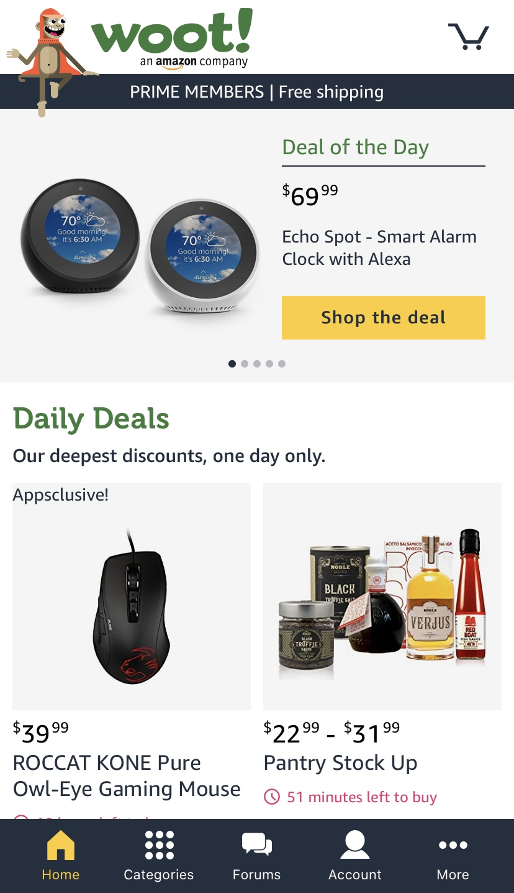

Rule of Thirds
Roolee
roolee.comThis page from Roolee is a great example of the rule of thirds. The landscape images and the white information across the middle make a nice grid, splitting the page into thirds. This allows for the center of attention to be on the children in the upper left. They are nicely positioned in a perfect spot outlinded by the rule of thirds.
Alignment
Woot
woot.com This page from Woot displays a great use of alignment. The advertisement at the top of the page features an Echo spot. The image of the Echo is on the left, while teh text is on it's right. This text is flush left to the image. This shows that the text is meant for the image, and the aligntment is clean and neat.
Contrast

The Google search homepage is a great us of contrast. There is not a lot going on with this page, and the main point of it is to simply complete a search. Contrast is a part of this design as the text features vibrant colors against a stark white background. This allows the viewer's eye to first go to the logo, and then right beneath it to search, which is the overall goal.